电商商家运营链路摸索整理
商家视角的运营全链路 | 阶段拆解 · 工具调研 · 矩阵经营 · 商家分层
本文的定位：站在商家视角，把电商经营的整条链路拆开看一遍：开店前要定什么，经营中选品、货源、流量、转化、履约各环节的门道，市面上的工具怎么选，做大了之后多平台多店铺怎么摆，以及不同阶段的商家到底需要什么帮助。整篇是从公开资料里摸出来整理的，多数结论带着"一般来讲""从资料来看"的口径，当作入门框架用是够的。
适合谁读：刚接触电商业务、需要快速建立全链路认知的同学，尤其是做平台侧产品或运营、要理解商家在想什么的人。
阅读建议：第一章按经营阶段走，是主干；第二章是工具清单，可按需跳读；三、四章讲规模化之后的形态，和第一章可以分开看。文中表格较多，手机端可左右滑动。
一、店铺经营阶段拆解
1.1 开店前的准备
开店前需要做相关前期准备，比如相关证件注册（营业执照等）、场地设备以及软件工具等，但最为关键的是作为卖家想要怎么经营，这个决定了后续一切的根基。
1.1.1 细分市场确认
男装、女装、生鲜、家居等，这个决定了行业的市场状况、受众群体的分布和需求，以及主要竞争对手的情况，不同市场的经营方法论是不同的。
1.1.2 预期品类方向
是做品牌，还是做白牌，这个很大程度上将决定经营的基础要求、受众、费力度、利润等。
| 品牌 | 白牌 | |
|---|---|---|
| 资金要求 | 高 | 低 |
| 受众客群质量 | 高 | 低 |
| 售后难度 | 低 | 高 |
| 毛利率 | 低 | 高 |
| 退货率 | 低 | 高 |
| 服务要求 | 高 | 低 |
| 上手难度 | 高 | 低 |
1.1.3 确定供货模式
在上述两个方向确定了之后，就需要解决货源的问题。比如说做品牌那就需要提前搞定货源，想办法拿到更低的进货价；再比如做白牌，那选择则更为多样，一件代发、中转模式都是完全不同的策略，这个决定了我们的市场调研选型。
| 一件代发 | 货源中转 | 自有货源 | 自有工厂 | |
|---|---|---|---|---|
| 是否拥有货源 | 否 | 否 | 是 | 是 |
| 是否具备独立售后能力 | 否 | 否 | 是 | 是 |
| 是否独立拥有客户信息 | 否 | 是 | 是 | 是 |
| 上手成本 | 低 | 低 | 高 | 极高 |
| 铺货成本 | 低 | 中 | 中 | 高（需要自己完整做品类图等，前序三种都有货物源头的图文可采用，只需要做主图、详情等即可） |
| 仓储成本 | 无 | 无 | 中 | 高 |
| 履约成本 | 低 | 高 | 中 | 中 |
| 售后成本 | 低 | 高 | 中 | 中 |
| 经营风险 | 无 | 多号下单被封禁 | 资金占用成本、货源维持成本 | 资金占用高 |
| 抗风险能力 | 强 | 强 | 中 | 低 |
1.1.4 电商平台选择
在电商平台选择上，需要依据前序的选择，然后来确认需要经营的平台。每个平台都有自身特点和调性，主要客户群体也不完全一样，同时平台的经营规则也不尽相同，对于卖家的偏好也不同。
目前从网上搜集来的资料来看，新手入门都建议是淘宝或者多多，抖/快电商都建议是在其他平台做熟了之后再来尝试，不然死的概率极大。
| 平台 | 优势 | 劣势 | 要求 | 费用 |
|---|---|---|---|---|
| 淘宝 | 天猫当前仍然是各大电商平台中做品牌不可缺少的阵地 | 当前流量见顶 | 大陆注册公司执照，公司经营无异常，个人及个体户不能入驻；一般纳税人公司（小规模公司通过渠道也可入驻）；商标注册证（R商标），部分类目接受TM商标。 | 保证金：一般旗舰店、专卖店5万，专营店10万（针对部分类目，可以享受免保证金开店的优惠政策）；技术服务费年费：分3万和6万两档，达标可以返还，返还门槛不高，大部分商家都可以达到；费率（佣金、扣点）：根据具体品类一般在2%-5%之间，实时划扣。 |
| 天猫 | 门槛低，规模大，商品种类多，知名度高，有阿里各方面的支持 | 淘天整体流量向天猫倾斜 | 个人店仅需个人身份证；企业店需营业执照 | 个人店：1000元保证金；企业店：大部分1000元，部分特殊类目3-5k，极特殊类目1w元以上。 |
| 京东 | 家电和数码产品做得好，品牌商品有一定的保障，自建物流服务好且可控。 | 经营成本很高，京东整体都向自营倾斜 | 大陆注册公司执照（个人及个体户可开设京东小店，相当于淘宝的C店）；除家电、3C等部分类目必须一般纳税人，其他类目小规模纳税人即可；商标注册证（R商标）或商标受理通知书（TM商标）。 | 保证金：大部分类目可以0元试运营开店，正式运营期采用阶梯保证金，开店保证金1000元-10000元不等，达到一定月销售额再进行补缴，以类目区分，不分店铺类型（部分类目和部分地区可享受产业带扶持政策，全年只要1000保证金，不跟销售额挂钩）；技术服务费年费/交易服务费：之前是1000一个月的年费，2023年4月1号开始改为收取0.6%一笔的交易服务费，按销售额计，退货商品不收取；费率（佣金、扣点）：根据具体品类，一般在2%-8%之间，类目差异大。 |
| 拼多多 | 一个身份证可以开多家店铺，适合有工厂生产的低价货源卖家。 | 商家处罚过于严格 | 个人、个体工商户、企业均可，旗舰店、专卖店、专营店需要企业才能开店；旗舰店、专卖店、专营店需要商标注册证（R商标）或商标受理通知书（TM商标）。 | 保证金：入驻及发布产品时不需要支付保证金，但有权限限制，商家需缴存1000元基础店铺保证金，月销售额达到一定标准，将上调保证金额度。基础技术服务费：先用后付订单每笔按（消费者应付金额+平台优惠金额）×1%技术服务费费率收费；其他订单每笔按（消费者实付金额+平台优惠金额）×0.6%技术服务费费率收费。 |
| 抖音/快手 | 新兴电商模式，潜在受众群体广，以短视频和直播为主要形式 | 去中心化的算法，爆的快死的也很快，如果产品力出现任何问题导致评分掉了，第二天就没单，这个对于供应链要求极大的考验。退货率奇高 | 官方旗舰店、旗舰店、专卖店、专营店、企业店申请主体应为企业，个体店申请主体为个体工商户，2023年开始重新开放了个人店的入驻。旗舰店、专卖店、专营店需商标注册证（R商标）或商标受理通知书（TM商标）且品牌力达标。 | 保证金：分基础保证金和浮动保证金，基础保证金看类目和店铺类型，浮动保证金看销量，两者选其高；例如女装类目个体店保证金2000元，企业店保证金4000元，达到一定销量还需要缴纳浮动保证金。费率（佣金、扣点）：根据具体品类，大部分5%；食品、3C等类目2%。 |
| 小红书 | 用户群体很年轻，消费能力强，年轻女性群体为主 | 规模小，社区的友好氛围和卖货赚钱有点冲突，公司的领导层经常换方向 | 个人店申请主体应为个人，个体工商户店申请主体应为个体工商户，普通企业店、专卖店、旗舰店、卖场型旗舰店申请主体应为企业（个人店部分类目不能经营）；旗舰店、专卖店、卖场型旗舰店需要商标注册证（R商标）或商标受理通知书（TM商标）。 | 保证金：类目保证金个人及个体户店一般1000元，企业主体开店保证金一般2000元-2万元不等；除了类目基础保证金还有根据月销售的浮动保证金，两者取其高。技术服务费：一个自然月订单结算额小于1万元时，平台免收技术服务费；结算额超过1万元的部分，平台收取5%作为技术服务费。1万元的订单结算额已减去退款金额。技术服务费小于5%的店铺，不享受万元下免佣规则。 |
1.1.5 相关证件准备
这个是最简单的。营业执照、各项行业资质、品牌资质等等，在上述相关确认了之后，经营模式基本也就确定了，那么就需要去准备相关符合国家法律法规的证件，例如营业执照、税务登记证、卫生许可证、各项行业资质、商品资质、品牌资质等等。
1.2 平台开店阶段
平台开店成本核心取决于开的店铺类型。一般新人试水的店铺类型普遍比较简单，大多数个人店铺以身份证即可入驻，相关资料准备完善后等待审批即可。
从网上的各类资料来看，对于初始类型的店铺（个人类店铺、个体类店铺）开店都未成为过任何平台的卡点，需要重点辅导的都是针对资质不全等无法直接满足平台要求的商家，这里更多的是付费的逻辑，说明各平台均存在着不同程度的"后门开店"场景。
同时有较多的付费买店（比如天猫店）的逻辑，这里也是核心应对冷启问题。这个就不在这里展开。
同时比如店铺装修、相关资质补齐之类的事情，也是隶属于开店阶段，商家需要在这个阶段一次性把店铺整理好。
1.3 平台经营阶段
开店成功之后，最首先涉及到的就是经营问题，也是网上各路重点资料包括付费内容的聚集区，说明这一块是整个电商经营过程中比较核心的部分。这一块核心负责解决如何引导消费者下单的问题，毕竟单量在电商里几乎意味着一切。
这里核心有3个部分：如何选品、如何铺货，如何快速起量。
1.3.1 卖什么（选品）
选品解决卖什么的问题。选品针对电商经营几乎是决定性的，品的潜力代表着整个后续经营的天花板，这里核心考验的是判断力。如何精准挖掘出符合当前潮流趋势、符合上升期的商品，这个是一个比较关键的点。
选品方法论五花八门，但最终核心一点都是需要依据自己对于市场的理解，做出符合自己的选品方法论。
1.3.1.1 选方向
首先要选择自己要做什么方向。其实这个方向在开店的时候，就已经有些范围约束了：每个店允许经营的类目是有限的，那么这些类目就是我们选品的最原始的倚仗。在这些类目中，再找到自己要做的实际子方向，一般来讲可以有以下手段：
| 方式 | 代表的选品方式 | 核心思路 |
|---|---|---|
| 通过数据选品 | 以词选品 20w词表选品 |
通过直通车、生意参谋等各大电商平台提供的数据功能，找到飘升词、新词，再拿这些词到市场搜索分析检验数据，找出竞争度小并且持续攀升的词，再通过词去找产品。想及时发现你所在的类目哪些词是飙升词，做关键词词表，一周记录一次，能有效发现关键词的涨跌。这个相对来说比较简单：去翻词表，主要找那些生僻关键词去生意参谋上去搜。大众都知道的词，肯定做的人还比较多，竞争相对来说大一些，所以选一些冷门词，也不好选很小的，搜索人气建议在一千以上。 |
| 通过垂直行业选品 | 以人选品 地域选品 兴趣选品 |
先确定想做的小众人群，再挖掘人群的需求。比如小个子这种细分市场，小卖家做不到，大卖家看不上，顾客粘性高，利润可观。这里的"人"代表的是一个群体，可以是职业，可以是年龄段，可以是一种称呼。地域选品主要选的是地方特产，可以把省份、市级地方名都找出来，然后放到生意参谋里面去查询，比如山东会出现一系列山东特产，竞争都不是很大。兴趣选品是根据人的兴趣爱好选择产品，越冷门越好，比如击剑鞋、击剑手套，小众做的人也少，就不会被各种价格战屠杀，利润也可观。但做这类普遍需要对于该行业较为了解。 |
| 通过紧跟时事选品 | 季节选品 节假日选品 同款选品 跨平台选品 |
季节选品：根据季节变化去选择产品，夏季的防晒、泳衣类型产品，冬季做保暖的一些产品。夏天产品清明节前布局好，清明节过后会爆发，冬季产品在国庆节过后会爆发。节假日选品：五一、国庆、过年、中秋、端午、圣诞都可以挖掘出一些节日有需求的产品，这类产品退货率整体很低。同款选品：按照最近火的电视剧、电影去选品，可以搜索电视剧的名字+同款，也可以搜索最近火的明星的名字+同款，也可以去生意参谋搜索同款看这个词的拓展词去选品。跨平台选品：根据抖音、小红书、知乎、微博，在这些搜索行为少或者不具备卖货能力的平台去选品，看点赞量高的带货视频或者文章，然后去生意参谋上查。做这类产品需要反应快，热度一过，就比较难做。 |
1.3.1.2 选商品
在锚定某个子方向之后，下一步就是选择具体的商品。这各大平台都有自己的选品平台供卖家选择，平台提供的一般都有使用限制，比如需要开单且完成x单，同时相关数据普遍以本站为主，跨站无法分析。所以催生了较多的三方工具，三方工具一般来讲更贵，数据获取来源也五花八门、权威性不足。但这个细分市场其实也是比较大的，尤其是对于大商家而言，数据基本是决定性的。
但不论哪种方式，只要找到对应好卖的商品，那下一步就是要去找货的问题了。下面是一些常见的数据平台：
| 来源 | 工具名称 | 数据适用平台 |
|---|---|---|
| 平台提供 | 生意参谋 | 淘宝/天猫 |
| 平台提供 | 京东商智 | 京东 |
| 平台提供 | 多多情报通 | 拼多多 |
| 平台提供 | 罗盘 | 抖音 |
| 平台提供 | 生意通 | 快手 |
| 三方工具 | 有米有数 | 抖音、快手等新兴电商平台的商品及营销数据 |
| 三方工具 | 蝉妈妈 | 抖音、小红书 |
| 三方工具 | 魔镜洞察 | 淘宝、天猫、京东、1688、速卖通、亚马逊 |
| 三方工具 | 小旺神 | 京东、淘宝 |
| 三方工具 | 将军令 | 淘宝、天猫 |
| 三方工具 | 店雷达 | 1688、亚马逊、速卖通、temu |
| 三方工具 | 电霸 | 拼多多 |
| 三方工具 | 癞蛤蟆 | 淘宝、天猫、京东、拼多多、抖音 |
| 三方工具 | 灰豚数据 | 抖音、小红书 |
| 三方工具 | 考古加 | 抖音 |

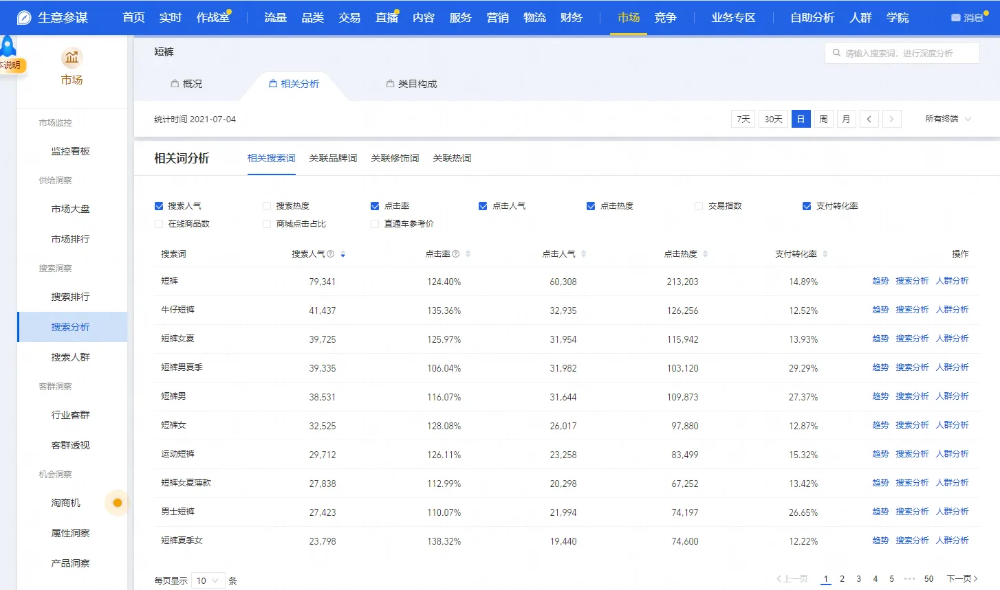
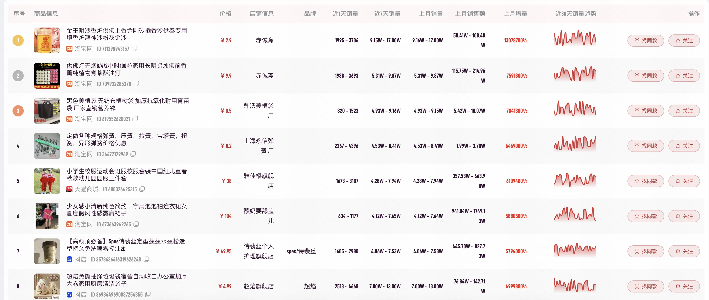
1.3.2 货从哪儿来（货源）
选品阶段选择到了自己要做的商品到底是什么，比如说是秋冬的针织衫，下一步就是需要解决自己的货从哪里来的问题。对于自有货源以及自有工厂的商家，这个并不是问题。而对于代发或者中转类的商家，找货就会是下一步比较关键的问题。
选货的学问有很多，也有非常多的方法论。但不论哪个，找到符合自己诉求的商品是非常重要的，这里就涉及到了具体的货源。
国内找货平台非常多，1688基本能够满足绝大多数中小商家的诉求。同时还有非常多的垂类货源网站供选择，下面列举了主要的。在这类平台上，很多都支持一件代发，能极大降低成本。
| 分类 | 平台 | 介绍 |
|---|---|---|
| 综合型 | 1688 | 阿里巴巴是现在很多没有货源优势的网店卖家首选的货源途径，也是现在国内最大的货源网站，货源种类丰富齐全。全球领先的采购批发平台。 |
| 综合型 | 义乌购 | 立足于金华义乌小商品批发市场的B2B电子商务平台。超全小商品货源可一件代发。 |
| 综合型 | 兰亭集势 | 国内知名的一件代发网站，拥有大量的库存。兰亭集势的产品也是全球销售的。 |
| 综合型 | 敦煌网 | 大型批发平台，注册卖家可以上架他们的产品。这使得其他人可以从中小型工厂或者批发商那里采购产品。如电子产品、配件、化妆品、服装、珠宝、玩具等，都是支持一件代发的。 |
| 综合型 | 通拓科技 | 通拓产品品类齐全。优势品类有服装、电子产品、家居用品等。产品的批发业务相对成熟，提供甚至高达20%的产品折扣率。 |
| 机械工业 | 慧聪网 | 1688之前的王者，后来阿里巴巴强大之后慧聪网的营销模式发生了很大变化，现在依然影响力很大，现在主攻偏机械工业类目方向。 |
| 机械工业 | 中国制造网 | 国内排名靠前的综合B2B电子商务平台，更侧重于工业、电子等方面，一对一询盘，垃圾询盘较少。 |
| 机械工业 | 中国供应商 | 性质和中国制造网差不多，主营也偏工业机械、五金方向。 |
| 机械工业 | 工品汇 | 一站式工业用品采购平台。 |
| 机械工业 | 工邦邦 | MRO工业用品一站式采购服务平台。 |
| 机械工业 | 网商网 | 五金汽车电子配件冷门的配件。 |
| 服饰/鞋子/箱包/美妆 | 53货源网 | 服饰鞋包、3C数码等等，支持一件代发。网站会有很多的代理信息，一定要注意甄别，问清楚是否免费代理之类的。 |
| 服饰/鞋子/箱包/美妆 | 货源之家 | 成立10年，提供运动鞋服、包包皮具、女装女鞋、饰品、化妆品等适合网店、微商代理分销批发的货源。 |
| 服饰/鞋子/箱包/美妆 | 杭州的网商园 | 上面有很多服饰鞋包，网站支持一键上传、一件代发、15天可退等一系列服务，货源主要来源于杭州、织里、常熟、石狮、濮院等地的各大档口。 |
| 服饰/鞋子/箱包/美妆 | 广州17网 | 各种男装、女装、童装齐全，包括居家服、泳衣等款式，更新快。 |
| 服饰/鞋子/箱包/美妆 | 四季星座网 | 网站的货源来自杭州四季星座、新杭派服饰城、保太和·星座女装电子商务楼、之江服装电子商务楼、意法服饰城等服装批发市场。 |
| 服饰/鞋子/箱包/美妆 | 衣联网 | 各种男装女装，批发商超过9000家，汇集广州十三行、沙河、白马、东莞虎门、杭州四季青等服装批发基地的供应商。 |
| 服饰/鞋子/箱包/美妆 | 广州酷有拿货网 | 全国知名服装批发，一手货源，可一件起批。十三行、白马服装批发市场一手货源。 |
| 服饰/鞋子/箱包/美妆 | 湖州的织里童装网 | 童装一件代发可批发。湖州织里是全国最大的童装生产基地，织里被誉为中国童装之镇，是中国重要的童装品牌聚集地。 |
| 服饰/鞋子/箱包/美妆 | 货牛牛 | 广州服装货源。 |
| 服饰/鞋子/箱包/美妆 | 多商网 | 男女装、箱包。 |
| 服饰/鞋子/箱包/美妆 | 生意网 | 经营童装的网赚。一手童装货源，支持一件代发，最关键是品类丰富。 |
| 服饰/鞋子/箱包/美妆 | 货捕头 | 包含杭州广州服装、织里童装、濮院羊毛衫、温岭女鞋等货源，提供一件代发、支持免费代理。 |
| 服饰/鞋子/箱包/美妆 | 环球鞋网 | 鞋行业垂直电子商务网站、鞋子品牌行业门户媒体，提供鞋子货源，同时还提供鞋子行业产经资讯。 |
| 服饰/鞋子/箱包/美妆 | 爱买卖 | 温岭女鞋批发货源。 |
| 服饰/鞋子/箱包/美妆 | 中国鞋库网 | 鞋子货源，支持一件代发。 |
| 服饰/鞋子/箱包/美妆 | 搜款网 | 服饰鞋子箱包类，支持以图搜款，自带插件，一键上传到电商平台，货源主要来自广州沙河、白马、十三行、解放南、潮汕普宁等地的服装批发市场。 |
| 服饰/鞋子/箱包/美妆 | 购途网 | 一站式女鞋批发采购代发服务平台。 |
| 服饰/鞋子/箱包/美妆 | 台州的开山网 | 主要经营鞋子批发市场，品类齐全，支持一件代发。 |
| 服饰/鞋子/箱包/美妆 | 包牛牛 | 十元就可以买到一个包包，主要走低价路线，比较适合新手卖家，是一家专门做箱包货源批发的网站，汇集了河北白沟、广州数千家的网供厂商。 |
| 美妆 | 娜拉美妆网 | 美妆采购批发网站。 |
| 美妆 | 个秀名妆网 | 主要经营韩国化妆品，批发分销平台，支持一件代发。 |
| 美妆 | 优分销 | 化妆品批发。 |
| 酒水饮料 | 58食品网 | 食品酒水经销商网站。主要经营奶制品、饮品等批发，还有许多小零食、粮油之类的。 |
| 珠宝 | 批发户 | 主营礼仪珠宝首饰，为出口跨境电商卖家服务。这个是出口电商一站式的货源平台，主要经营礼仪珠宝首饰，还有不少品牌商品。 |
| 家纺 | 91家纺网 | 家纺用品。 |
| 家纺 | 全球纺织网 | 服装面料货源。 |
| 母婴 | 挚爱母婴网 | 母婴类进口品牌。 |
| 3c数码 | 华强电子网 | 3c数码。 |
| 3c数码 | 猎芯网 | IC电子元件批发平台。 |
| 3c数码 | Dealextreme | DX是专门针对小工具和电子产品做一件代发和批发的网站。 |
| 土特产 | 众人店 | 特产批发。 |
| 信息发布 | 黄页88网 | 免费供求信息网。 |
| 婚庆 | TBDress | 一家婚庆和女士服装为主的网站，通过个性化的推送功能，为不同的客户推送他们可能喜爱的产品。同时也为国内外的卖家提供一件代发的业务。除了网页版，还可以通过iPhone和Android应用程序访问。 |
| 成人用品 | 性商网 | 成人用品。 |
| 跨境 | 环球资源 | 老牌的B2B平台，侧重于服务于外贸行业，主打贸易杂志和展会等等。不过前两年被美国黑石集团收购后，企业的方向已经转变了，展会也在减少。 |
| 跨境 | 环球华品 | B2B跨境电商平台，外贸货源批发分销平台，支持一件代发。产品分类全面，包括便宜的衣服、包、鞋、珠宝和配件、美容、3C产品、家庭必需品等，超过500,000+ SKU。 |
| 跨境 | SheIn | 为卖家和个人提供服务，主要专注女性时装和配饰。SheIn的优势在于他们追逐潮流，甚至有时候能引领时尚的风潮。能做鞋子、包包、衣服等。如果你想开一家与女装相关的商店，也可以通过SheIn来一件代发。 |
| 跨境 | 棒谷 | 深圳一家优秀的跨境电商一件代发和批发网站。产品种类丰富，主要面向老人和孩子。 |
| 跨境 | Zaful | 在国外知名度远大于国内，品牌还上过纽约时代广场的银屏。为广大女性提供价格实惠的时尚单品，最近也包括男士时装系列。 |
| 跨境 | GearBest | 跨境电商货源。 |
1.3.3 怎么被看到（流量）
营业额 = 流量 × 转化率 × 客单价 × 复购率
有了货之后，下一步商家需要做的是如何把货卖出去。对于所有的平台而言，流量都是商家必争之地。消费者能买的前提是能够看到，而消费者能够看到的品总是有限的，因此如何让消费者看到，这个是商家需要解决的问题。这个过程我们称之为推广，也就是营销。
这个在不同的电商平台拥有着不同的方法论，货架场与内容场差异巨大；即使同是货架场或内容场，由于平台流量分配策略的不同导致打法不同，因此完全无法照搬。这与选品并列，是电商经营最核心的两个点。
一般来讲，电商平台的流量会分为以下三个场域：
| 场域 | 描述 |
|---|---|
| 搜索场域 | 我们传统的货架电商核心流量来自于搜索，宽口径成交占比能够高达60%-70%。 |
| 推荐场域 | 一般指各种各样的信息流，如首页信息流、活动信息流等等。直播场域就包括feeds流插卡等形态。 |
| 私域 | 一般指店铺内部。当然对于直播电商而言，直播时的粉丝复购我们一般都算为私域。 |
1.3.3.1 搜索场域
搜索场域商家流量获取，主要依赖于平台对于商品的打分。平台会从多维对商品进行建模，包括商品相关性、商品价格、销量、商品质量分、店铺分、履约分、客服满意分等等，依据宏观流量调控算法（如GMV导向、价格力导向、中小倾斜导向、UV价值导向、客单价导向等），选择出合适的商品进行展示。
这时商家需要在尽可能匹配平台策略的情况下，提升自己的多维分数，从而促使商品尽可能靠前展示，促成交易。
搜索场域整体分为三大类的流量呈现：
自然流量：这个比较考验商品本身的竞争力 + 商品与平台导向的同频性。比如说在一个GMV导向的宏观调控策略中，9毛9的货就很难出现在前几页，这时卖品牌货就比较容易被消费者看到。
广告流量：一般来讲搜索场域首屏12个商品，最多会插5个左右广告。如何买到便宜又量大的广告，这个非常考验广告投放的能力，也是一门很深的学问，大公司也专门会为此设计相关岗位。
活动流量：一般指参与相关活动所获得的流量，比如顶部插卡、商品中间插卡等等，这个取决于参与的各个营销活动，也就是需要通过参与各种各样的营销活动来获取此部分流量。但注意此部分流量并非免费的，一般要么做让利做低价，要么掏钱搞赞助。
1.3.3.2 推荐场域
推荐场域在货架场与搜索场域整体类似，也整体分为自然流量、广告流量以及活动流量三大部分。但需要注意的是，推荐场域并不像搜索场域是固定位置，其所投的流量可能出现在各个推荐环节，因此流量本身波动较大。
而对于直播电商而言，推荐场域的流量会是客群主要流量，上述方法论可能不适用，也需要商家重新进行摸索。
1.3.3.3 私域
私域是商家比较喜欢的流量，因为这部分流量是商家唯一可掌控的、完全属于自己的流量。一般来讲通过商家会员、微信群等手段进行维系，这个一旦维系好了，消费者是愿意跟着商家走的。比如说山姆会员店在京东开了店，当山姆本身货品无法次日达时，会通过京东的山姆会员店进行下单走京东仓从而达到更高的时效。同样针对大主播的粉丝，其私域粘性是非常强的，很可能跟随着主播换平台。
对于平台而言，都会一方面给商家提供有限的私域运营手段，一方面打击大私域的出现。就比如多多完全弱化了店铺的概念，让消费者忠诚在平台的商品而不是具体的店铺上。
以上只是讲了一些普适的逻辑，实际每个平台的运营操盘都非常复杂，如何获取这三个域的流量都是比较有学问的事情，也是网上卖课的核心。
1.3.4 怎么吸引下单（转化）
有了货，有了展示给消费者的流量，下一步就是具体品的承接。所以下一步商家必争的点在于提升转化，也就是货在相关场域被消费者看到了，那如何吸引他点进来，点进来后如何吸引他下单转化，这个是一件比较困难的事情。
网店与传统的实体店铺不同，因为接触不到实物，消费者只能通过卖家商品详情页的文字、图片等来想象所需购买的商品效果。因此避开设计误区，让消费者在了解商品的过程中，逐渐提高对店铺的信任度，打消疑虑的同时激发消费者的消费欲望，才是提高商品转化率的重点。
商品详情经过这么多年的迭代，目前各大电商平台基本都已经比较类似了，整体可分为如下几个区。逻辑上商家针对每个区都需要做一定的设计，重点需要凸出商品的性价比，尽可能地吸引消费者进行转化。
下面用淘宝和拼多多的商品详情页做拆解（整页长图左右并排，中间行逐区域对照）：
| 淘宝 | 拼多多 | 区域拆解 | 区域截图 | 商家可发力点 |
|---|---|---|---|---|
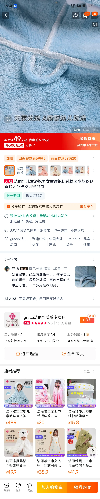 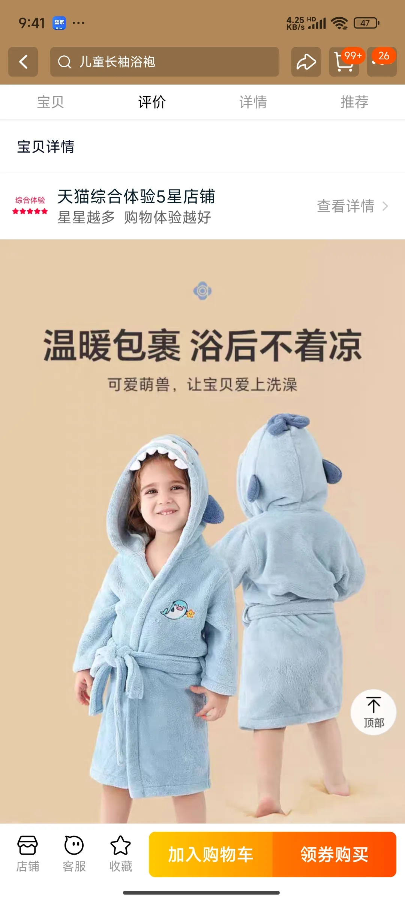 |
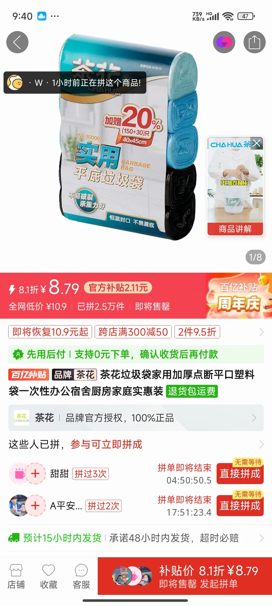 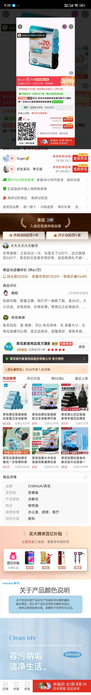 |
图片&视频 | 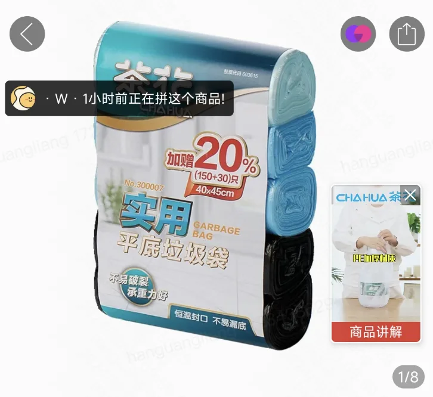 |
图片区是消费者第一眼看到的东西，这个区域是商家重点可自己打磨的区域。第一张图称为主图，主图一般是商家重点打磨的图，核心想要吐出的利益点都会放在图上。主图各个平台都会有相关管控，希望主图干净一些，不然会显得整体乱七八糟，这里要匹配各方风格。价格区部分一般都是平台设定好的样式及规则，重点参与相关营销活动即可。 |
| 价格&优惠区 | 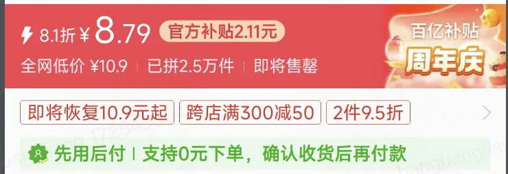 |
价格区一般不可控，商家只能通过设置各种各样的营销工具让其饱满。 | ||
| 标题区 | 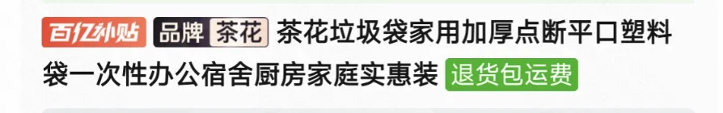 |
标题区在详情一般没什么太多作用，在搜索页的作用比较大。 | ||
| 服务区 | 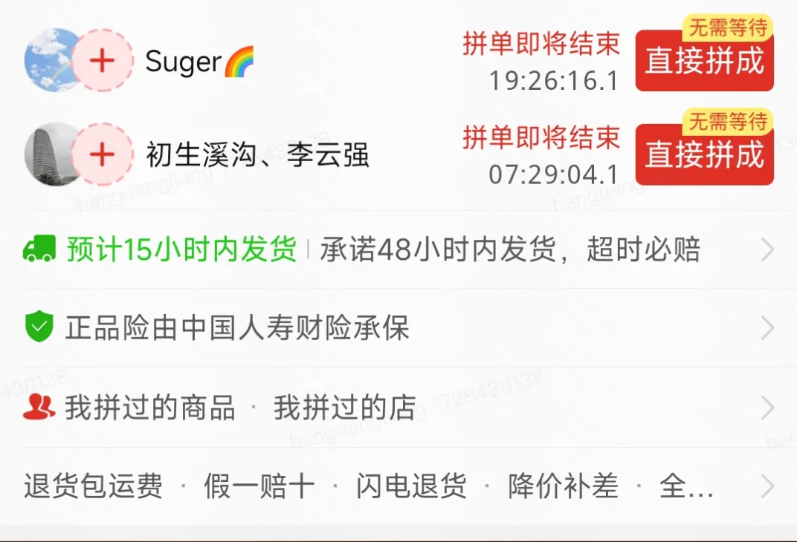 |
这里体现的就是商家对消费者做出的相关服务承诺，一般来讲越多越好，但越多也就意味着更好的服务。 | ||
| 评价&问大家 | 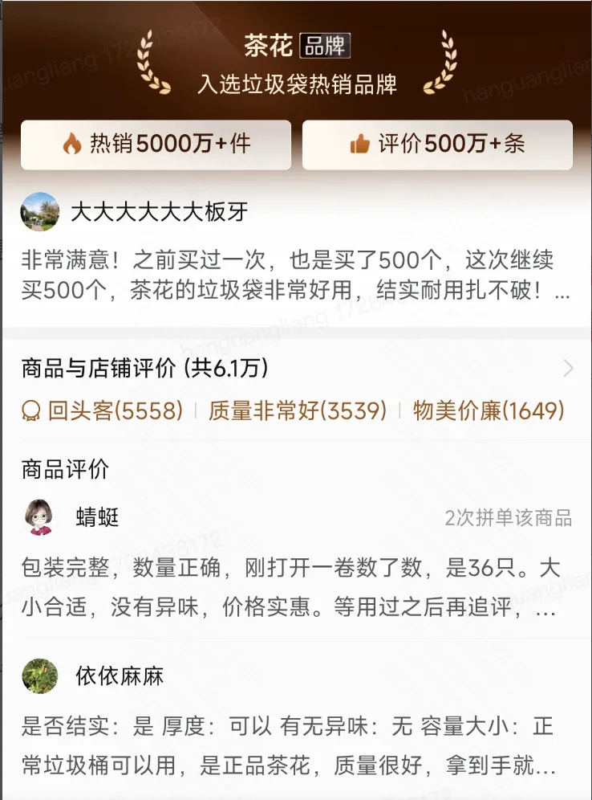 |
这里是消费者借鉴区，因此中差评需要想办法消除。 | ||
| 进店区 | 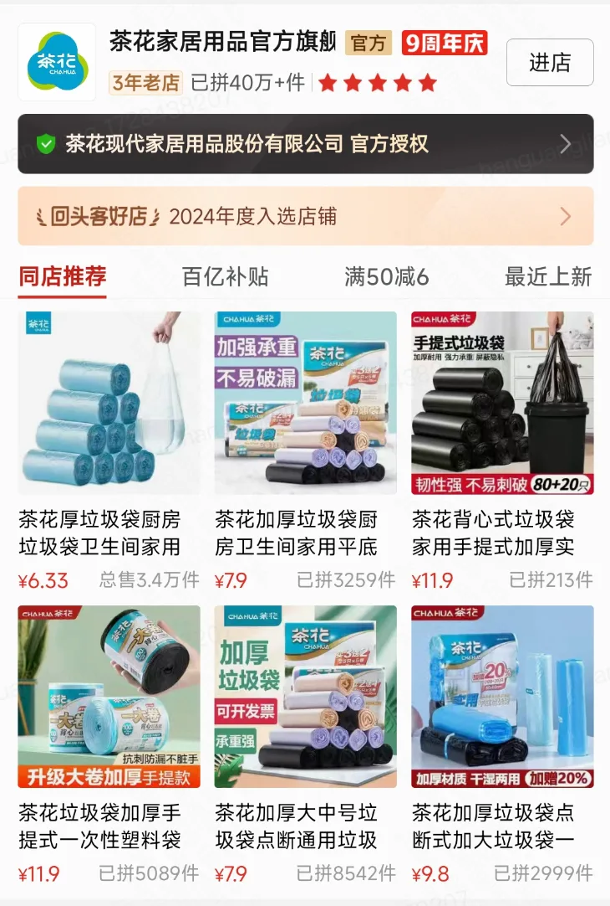 |
这是核心引导消费者进店的入口，一般来讲区域并不受商家控制。 | ||
| 详情 | 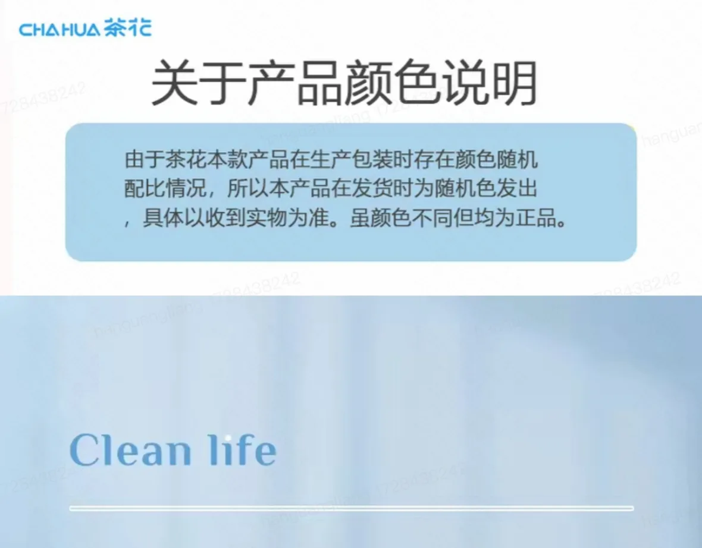 |
这个是商家可发力的部分，自由发挥，但需要控制内容大小。 |
1.4 平台履约阶段
1.4.1 发货（履约）
订单管理从逻辑上讲是交易的延伸，在前序消费者下单后，商家需要进行相关系统的履约。这里核心是物流相关，也就是商家的货怎么发的问题。
在发货之前，会涉及到一个问题：作为商家，货物要存储在哪里？这个一般与物流时效强相关，不同类型的商家的方式不同。整体来讲，物流履约这一块，在业界是有比较成熟的解决方案的。
| 一件代发 | 货源中转 | 自有货源 | 自有工厂 | |
|---|---|---|---|---|
| 仓储方式 | / | / | 自建仓/菜鸟仓/京东仓 | 自建仓/菜鸟仓/京东仓 |
| 物流合作方式 | 不可控 | 三通一达/极兔/顺丰/京东 | 三通一达/极兔/顺丰/京东 | 三通一达/极兔/顺丰/京东 |
| 发货时效 | 与上游一致 | 不可控 | 可控 | 可控 |
| 物流时效 | 与上游一致 | 慢（要先收到货再发货） | 可控（可以自由选择物流） | 可控（可以自由选择物流） |
| 物流限制 | 与上游一致 | 可控 | 可控 | 可控 |
1.4.2 退换货（售后）
售后管理这块，核心包括两部分：客服以及逆向。
客服在各个平台的重要性都比较高，各个平台都会有一个客服体验分作为整体店铺的衡量指标，而这个指标又会直接影响商家可以获得的自然流量，因此对于商家来讲，这块的人力配备基本是不可少的。
| 阶段 | 典型场景 | 一件代发/货源中转 | 自有货源/自有工厂 |
|---|---|---|---|
| 售前 | 未下单咨询、下单后咨询、静默催付款 | 夫妻店或店主，1个人 | 一般来讲售前与售中会是一批人，售后单独一批人 |
| 售中 | 发货后改收货信息、改尺寸、备注颜色等 | 夫妻店或店主，1个人 | |
| 售后 | 少发、错发、质量问题、空包、不喜欢、7天无理由退货 | 夫妻店或店主，1个人 |
因为客服需要应对不知道什么时候来的消费者：当量小时，半天没来个人，结果来人的时候又不在，会影响客服分。因此当店稍微到了一定规模后，就会去自建/外聘客服。当前业界核心有以下几种客服支撑方式：
| 序号 | 模式 | 解释 | 优势 | 劣势 |
|---|---|---|---|---|
| 模式一 | 店主自己当客服 | 自己当客服，一般需要12小时以上 | 省钱；对产品更为了解，产品解释更为专业；无业务沟通成本（发新品、撤品等业务策略变化天然就感知） | 遗漏/不及时处理消息，当咨询量变大或者自己出去时，有消费者不及时处理；坐班如坐牢 |
| 模式二 | 共享客服（分时共享模式） | 相当于借用三方的人力SaaS | 压力分担，店主更为轻松；成本相对适中，有的甚至可以做到500/人月；不存在管理成本 | 可管控性最弱，高峰期可能存在资源争抢问题；业务/客服团队沟通成本高；客服专业度不足，对于产品了解较少 |
| 模式三 | 外包客服团队（驻场外包模式） | 将客服团队整体外包给专业的客服团队 | 压力分担，店主更为轻松；话术更为专业；不存在管理成本 | 成本较高，但可以将客服团队转移至低收入地区；可管控性弱；业务/客服团队沟通成本高；客服专业度一般，整体不受自己管控 |
| 模式四 | 组建客服团队（内部编制） | 自己组建客服团队，一般需要2班倒 | 压力分担，店主更为轻松；客服专业度高，与团队配合更顺畅；业务/客服团队沟通成本低 | 成本最贵，一个客服即使算2.5k，2班倒最少也得5k/月；存在管理成本，人员离职等事情需要关注 |
当前客服的生态也是比较丰富的，对于前期发展的中小商家，一般会选择前面2种；等真正规模变大了，会依据成本情况采取后面2种。当前在业界客服外包是一种比较常见的生态模式。
1.5 消费者运营
这里的消费者运营一般都指购后的消费者运营，商家需要尽一切可能地留存消费者，从而让消费者产生复购。而复购的前提是前面的阶段都做得比较好，再对消费者去做吸引会比较有利。
但从整体资料梳理来看，目前其实没有做得比较好的。因为私域流量一直是平台在博弈的东西，平台只期望不脱离平台的私域，而对于传统商家想要的私域，一般都是大力打击的，包括好评返现、引导微信群等等。在货架场，消费者一般与平台建联；在直播场，消费者一般与达人建联。这块目前没有成熟的方法论。
1.6 数据分析阶段
市场洞察与竞对分析，这类数据软件在市面上是相对比较多的，同时也是经营的大脑。数据整体分为两大类：1）店铺经营数据；2）行业趋势数据。
店铺经营情况的数据，权威的数据一般都来自于各平台，每个平台都会提供相关的数据系统供商家使用（前面也都提到了各家公司的数据系统）。每家的数据平台，都会包含两类数据：自身店铺的经营情况 + 行业趋势的分析，比如搜索热词、每个行业的top店铺等等。
1.6.1 店铺分析（经营状况）
这块一般来讲各个平台都提供了相关数据，所以基本上也都以平台提供的数据为准，然后结合以分析，最终来诊断自己的情况。
1.6.2 行业分析（趋势分析）
行业趋势数据，一般都需要商家通过各自手段去找以及判断，常见的数据情况，这个一般仁者见仁智者见智去找自己的数据渠道，市场上这块的产品也是打得火热。
二、商家经营工具调研
2.1 选品辅助工具
前序介绍了如何选品，在过程中运营也需要一些工具来辅助选品流程。这个过程一般来讲是通过一些插件，能够方便地分析竞对商品的情况，用于自己选品的参考。
| 系统 | 功能 |
|---|---|
| 电商记 | 电商运营专用的数据监测和采集工具，自动获取主关键词、营销类目、监控关键词、监控店铺、查询销量、收藏历史等各类数据。 |
| 直通车词表 | 关键词、热词设计、选取。 |
| 店查查 | 看看别人的店是怎么做的。 |
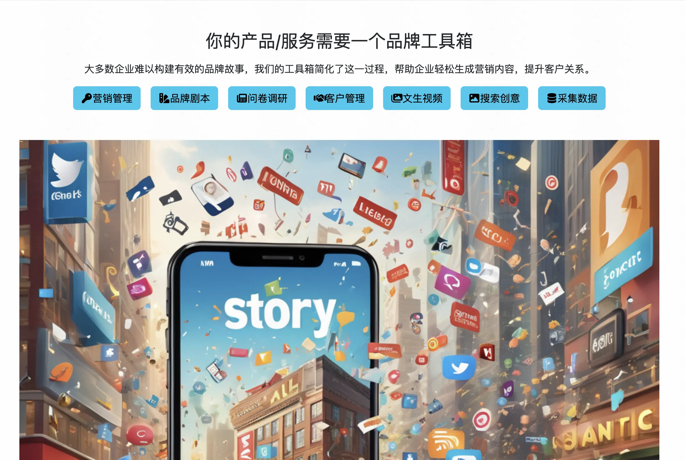
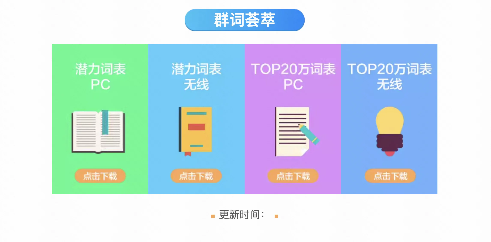
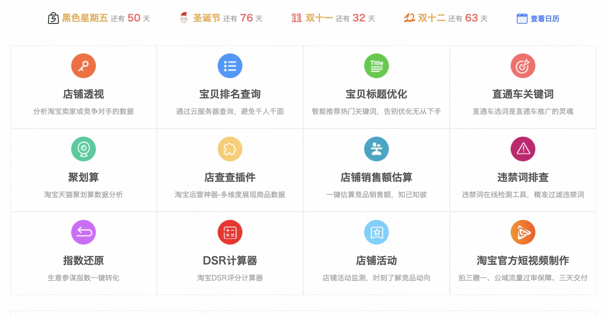
2.2 货源辅助工具
这里有非常多，就不详细列了，简单列两个：
| 系统 | 功能 |
|---|---|
| 以图搜图 | 这种基本就靠自己下载别的店铺的图，然后去各个地方搜。 |
| 1688找货助手 | 快速找货源。 |
| 店透视 | 竞品分析插件（见 2.4.3 数据插件）。 |
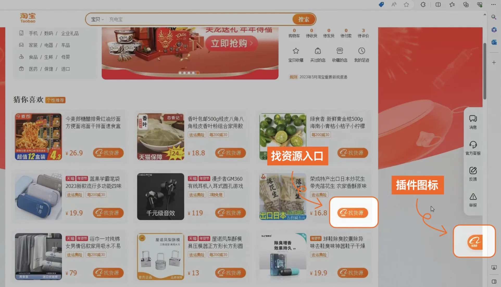
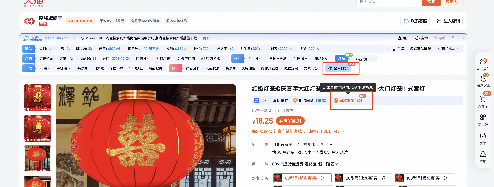
2.3 经营辅助工具
2.3.1 发品/一键铺货
| 工具 | 描述 |
|---|---|
| 1688铺货助手 | 一键铺货插件。 |
| 各ERP系统 | 如聚水潭、网店管家等ERP系统，能够帮助商家进行多店、多平台货源管理。 |
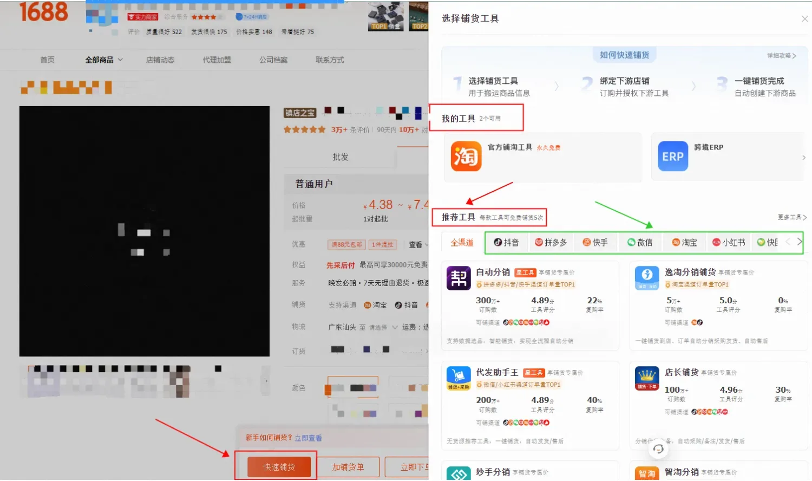
2.3.2 营销/广告
| 工具 | 功能 |
|---|---|
| 电商记 | 电商记免费提供直通车情报工具，让你了解竞争对手如何投放直通车。它是一款集淘宝直通车推广、提升直通车技巧的直通车关键词优化助手，可查看竞争对手自然搜索、直通车推广、整店销售情况的详细排名数据。 |
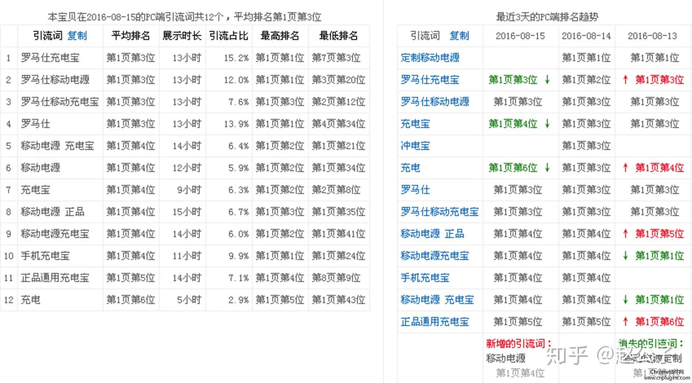

2.3.3 素材/作图/模特
| 方向 | 网站 |
|---|---|
| 模特图 | 往拍麻豆、买家秀网、爱拍秀等等。 |
| 素材获取 | 千图网、花瓣网、素材中国、昵图网、淘图王、千库网、摄图网、包图网 |
| 作图 | PS、淘拍、爱剪辑、快剪辑、淘宝美工助手、美图秀秀 |
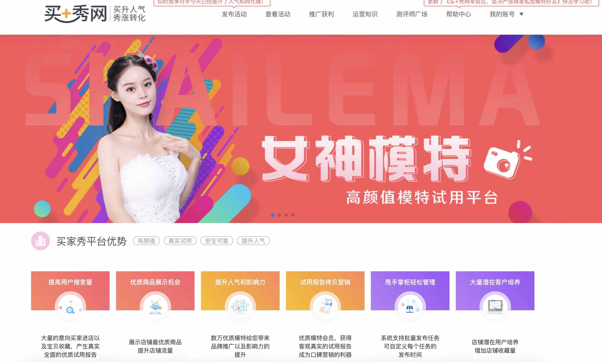
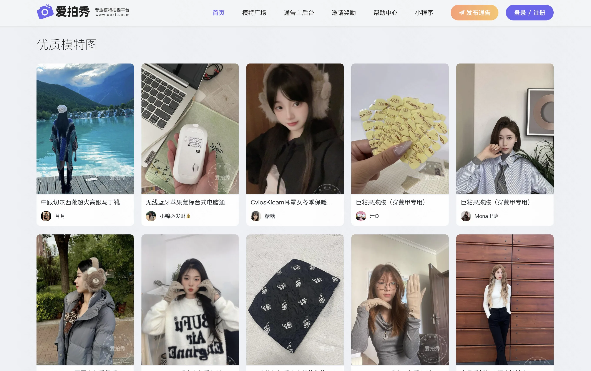
2.3.4 履约/打单
| 类别 | 描述 |
|---|---|
| 平台官方提供 | 平台当前基本都会提供相关订单、履约管理的能力，同时会对接好各个物流系统，商家只要正确填写单号、进行发货即可。 |
| ERP类 | 各三方ISV基于平台提供的开放平台接口定制的相关软件，当前比较出名的有聚水潭、旺店通、万里牛、网店管家等等。 |
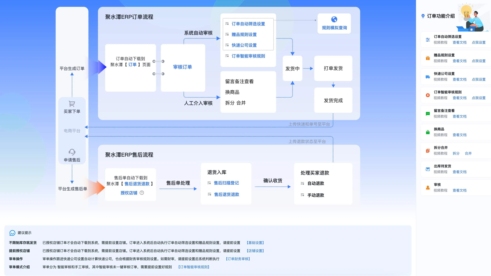
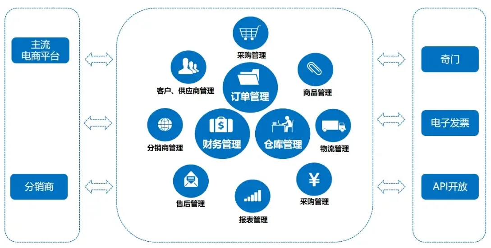
2.3.5 买家运营
| 工具 | 功能 |
|---|---|
| 反恶联盟 | 快速识别职业打假人。 |
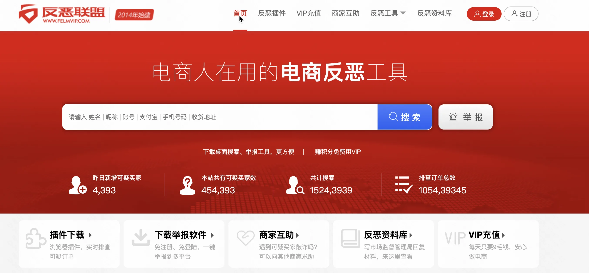
2.4 数据辅助工具
数据辅助工具在市场上当前是五花八门的，基本上所有商家都会对数据格外关注，因此催生了非常多的数据相关系统。数据辅助工具一般分为三类，分别用于不同的阶段以及用处。
2.4.1 平台数据
顾名思义就是平台提供的那些数据能力，这些数据对于大部分的中小商家基本都是够的，可以看看自己店铺的经营情况。这里的辅助我们就不提自己店铺本身经营情况了，核心看竞对等能力。
各个平台一般情况都会有些平台内部竞对商家的经营信息，这个一般都是品维度，还有一些热词之类的趋势信息供大家查看。平台数据的最大优点是准确，它的数据源是本平台的实际经营数据，比三方扒取的更具有权威性。前面也介绍比较多了，这里就不再详细讲。
收费情况来看，大部分的平台数据都会分为初级版跟高级版，一般初级版都是只能看自己店铺的相关数据，掏钱就可以看竞对相关信息了。
2.4.2 三方数据
三方数据一般来讲就是各三方系统依据自己的各种手段扒出来的数据，然后进行的分析比对。前面也列了比较多比较常用的数据软件，这里就不一一去讲了，像有米有数、蝉妈妈、魔镜洞察、小旺神、将军令、店雷达、电霸、癞蛤蟆、店查查等等。
三方数据相对来讲权威性不足，但是好处是这种三方软件一般都是汇聚全网，所以数据的广度上要比平台数据要好。
三方数据普遍都是收费的，不同的平台收费情况不一样，一般中小商家挑选适合自己的，用一两家就可以了。
2.4.3 数据插件
| 插件 | 作用 |
|---|---|
| 店透视 | 是一款可以分析卖家竞争对手数据的浏览器插件，指数还原准确率99.99%，一个账号支持多店铺使用，全功能免费体验。插件涵盖多电商平台功能：京东商智指数还原、生意参谋指数还原、直通车工具、宝贝详情页工具、拼多多详情页工具、京东详情页工具、标题优化、宝贝查排名、超级推荐工具、店铺上新监控、1688详情页工具、SKU销量监控、淘客检测、买家标签透视等。 |
| 小旺神 | 与店透视类似，相关商品详情等都可以做到同类查询。 |
| 店查查 | 是一款专业免费的淘宝网店数据分析插件。可以帮助用户查询各种网店数据，包括商品价格、上架时间和淘宝排名等等，能够让用户清楚完整地了解网店的运营状况，分析直观，包括聚划算活动各个阶段数据一目了然。支持实时监控店铺销量，每10秒进行一次数据更新，是卖家实用必备的数据工具。 |
| 大白工具 | 提供跨类目流量来源、生意参谋指数换算、竞品分析、店铺分析以及详情页工具等功能。可以安装在浏览器上使用，在打开淘宝相关网站或者生意参谋即可使用，全网首发一键透视任意竞店流量来源，还有买家秀采集、问大家采集、主图&视频下载、店铺微淘和直播分析、上新监控等详情页功能，以及可以查询任意单品主图点击率、首图CTR评分、主图牛皮癣等的数据分析功能。 |
| 电商记 | 是一款操作简单、功能强大的电商管理优化插件，可以帮助用户轻松查看任意一款商品的排名、直通车、店铺等多种数据，方便卖家分析竞争对手宝贝数据，真正做到知己知彼百战不殆。 |
| 千里眼 | 是一款可以直观展示淘宝官网搜索页面上每个宝贝的上下架时间、PC端在线人数、宝贝的关键词排名、展现量、点击量、宝贝的价格变化曲线等汇总数据的电商工具。 |
三、商家矩阵经营
一般来讲走到这个环节的商家，一定是已经成功地开出一家店、脱离了新手期的商家。对于电商的整体准备工作、经营模式有了一定的了解，可能是单店发展遇到瓶颈，想要通过规模化扩大生产，从而获得更多的利润。
商家矩阵经营一般有2个叠加因素需要考量：
1）平台的选择：到底是单平台经营，还是多平台经营；
2）店铺的选择：是在同一个平台，是单店铺经营，还是多店铺经营。
| 经营难度 | 抗风险能力 | 商家画像 | 劣势 | |
|---|---|---|---|---|
| 单平台单店铺 | 简单 | 低 | 小商家 | 封禁等风险较高，抗风险能力差 |
| 单平台多店铺 | 中 | 中 | 中等规模 | 平台一旦识别到是同商，则会进行流量降权等操作；商品销量被分散到多店铺，在流量吸引上差一些 |
| 多平台单店铺 | 高 | 中 | 中大等规模 | 客服、售后履约成本高，号养不好就会废；一般来讲会由多个团队来经营 |
| 多平台多店铺 | 极高 | 高 | 大商家 | 一般来讲需要多个团队来经营；多店铺更多的适用于backup，防止主号被封的情况 |
3.1 矩阵定位确认
3.1.1 多平台定位
多平台经营，一般情况下需要依据自身产品发展阶段来做平台上的选择，在人力有限的情况下，需要做好不同渠道的定价规则和订单管理，比如：
京东、天猫利于品牌旗舰，适合做高利润产品；
淘宝、拼多多可用来走量，价格酌情低一点；
抖音小红书可做内容布局和营销，抖店做或活动的低一些做利润的高一些。
这种模式特别适合服装等行业，因为这些行业通常需要频繁更换季节性产品和处理库存，通过不同平台完成不同的事，以达到最佳经营效果。此外，还有根据国内和跨境区分进行的矩阵模式：一边是以高客单价拉利润，另一边则侧重于高流量薄利多销。
多平台经营，相互之间没有冲突，一般来讲也不会有太多的风险存在，但由于多个平台的心智不同，商家需要及时转变相关经营理念。
3.1.2 多店铺定位
多店铺经营不同于多平台经营，是存在一定风险的，不同平台对于多店铺的喜好情况是不同的。淘宝本身更期望商家单店深度经营，因此对于多店模式并不喜好，可能会存在一定的制裁。阿里巴巴有个"同人店铺"的判定规则，会把一个团队经营的多个店铺关联在一起。
淘宝对于"同人店铺"的识别方法，其实有点类似我们之前说的作弊稽查系统，会进行多维度的关联识别，比如多店铺登录IP、后台注册信息、法人信息、电话号码、手机硬件、ERP抓取订单匹配的商品编码、图片空间、发货地址、退货地址等等。
所以在淘宝会看到一个团队经营多个店铺，往往只有一个店铺做得比较好。就算你发力做第二个店铺，可能会出现的结果是：其他店铺只要起来了，反而会影响原来销售比较好的店。比如一个商家既有淘宝企业店又有天猫旗舰店，但在搜索结果页里，即使这两家店都卖得很好，一般情况下也只会出来一家，以防止商家通过多店矩阵经营的形式将平台的流量全部薅走。
而对于多多而言，由于强商品心智，整体上是不在乎商家开多家店的，反而比较鼓励开多家店，因此多多上常态的活跃店铺都有上千万家。这个也是平台规则的导向：一个商家可以开一大堆的店来卖同一个东西，这个时候对于商家而言，可以自己与自己赛马去摸平台的机制，但多多不在乎，多多更在乎单品的品效，平台上消费者更加忠诚于平台而不是商家。
对于当前的内容电商而言，其整体规则约束与淘宝类似，都会有同商识别策略并做相应的限制。因此对于同平台多店铺，如若进行经营，则需要熟悉平台规则，在平台规则的框架内进行。
3.2 系统支撑
商家进行单店经营时，一般来讲可以通过平台提供的相关工具较好地完成经营。但一旦涉及矩阵经营，其多店/平台间的数据便天然是隔离的，打通多店/平台数据，目前是切实存在的商家诉求，同时市面上也存在着相关的系统来做这件事情。
整体上来讲，跨店/平台运营，核心有两类诉求：
1）常规店铺运营支撑：如聚合店铺的订单统一管理、商品批量多店/平台发布、发货管理等等；
2）数据支撑：跨店/平台的经营数据分析。
3.2.1 运营系统支撑
| 工具 | 描述 |
|---|---|
| ERP类 | 例如像聚水潭之类的ERP软件，它本身是跨平台的，那么就需要每个平台每个店铺都买一个，然后它就能够帮忙进行相关聚合、分析等管理操作。 |
| RPA类自动铺货助手 | RPA（机器人流程自动化）结合API（应用程序编程接口）可以实现更高效、更灵活的自动化流程。这种对于技术要求比较高，一般都是三方进行相关定制。 |
| 自研系统 | 一般店铺规模到了一定程度，可能会选择ERP系统的适配化改造，这个改造一般来讲都是基于各平台提供的网关接口来进行。 |
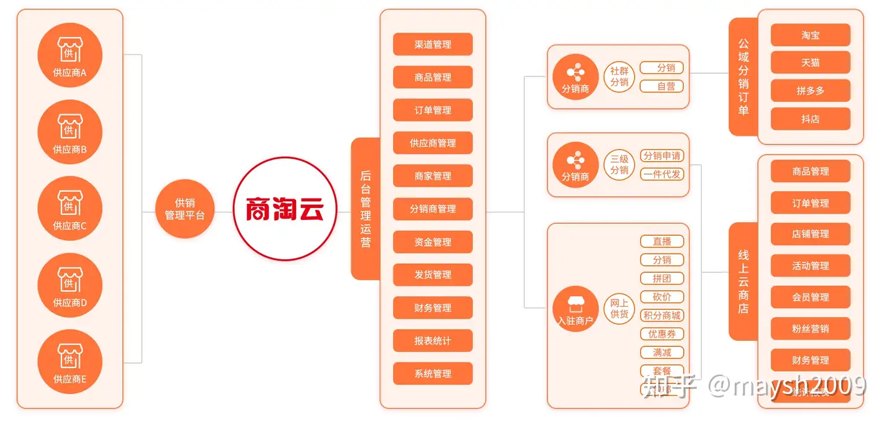
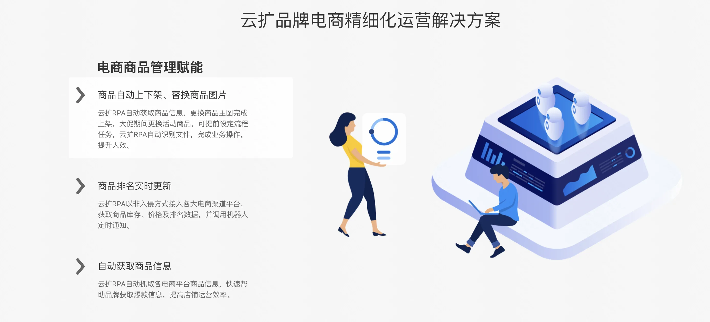
3.2.2 数据系统支撑
3.2.2.1 经营数据
这里就存在着多平台同一份商品的管理成本，因此存在着一些商品、订单、物流同步的订单类管理软件的需求。市场上针对这个细分赛道也有着比较多的产品，比如商淘云订单管理系统，能在一个后台同步多个平台的商品、库存、订单、物流等，省时省力。
| 工具 | 描述 |
|---|---|
| EXCEL | 这个是对于中小规模商家最习惯用的方式，将各个平台数据按月下载下来手动分析，同时电商公司内部会有相关财务人员进行自有系统数据的一个比对。 |
| RPA类 | RPA（机器人流程自动化）结合API可以实现更高效、更灵活的自动化流程。通过API，RPA工具可以与各种系统和服务进行交互，无需人工介入，实现数据的自动获取和处理。例如，Coze的智能体可以通过API与RPA工具如影刀RPA集成，实现自动化流程。 |
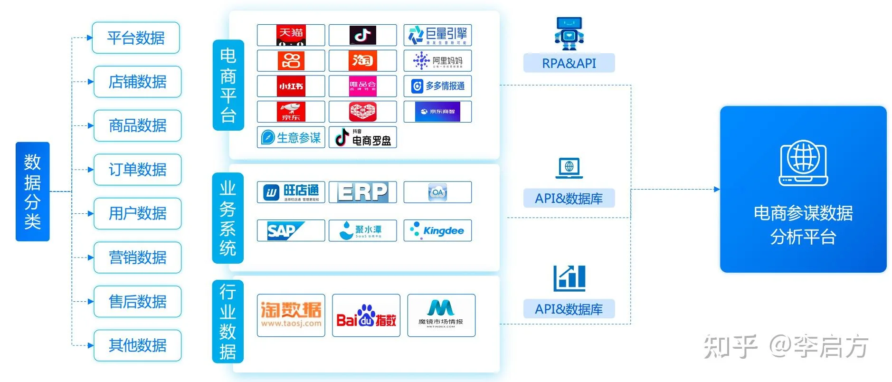
3.2.2.2 趋势数据
趋势数据其实整体上与多店无关，是作为电商运营本身就需要的技能，也就是对于行业的敏感性。这个前序其实提过比较多的平台能够看各平台的数据，除了电商平台外，还有相关行业趋势等分析报告需要商家关注，了解自己所选类目、行业所处状态，这个就不多做赘述。
| 类型 | 平台 | 支持的平台 |
|---|---|---|
| 电商趋势数据 | 有米有数 | 抖音、快手等新兴电商平台的商品及营销数据 |
| 电商趋势数据 | 蝉妈妈 | 抖音、小红书 |
| 电商趋势数据 | 魔镜洞察 | 淘宝、天猫、京东、1688、速卖通、亚马逊 |
| 电商趋势数据 | 小旺神 | 京东、淘宝 |
| 电商趋势数据 | 将军令 | 淘宝、天猫 |
| 电商趋势数据 | 店雷达 | 1688、亚马逊、速卖通、temu |
| 电商趋势数据 | 电霸 | 拼多多 |
| 电商趋势数据 | 癞蛤蟆 | 淘宝、天猫、京东、拼多多、抖音 |
| 电商趋势数据 | 考古加 | 抖音 |
| 电商趋势数据 | 灰豚数据 | 抖音 |
| 行业数据 | 36kr | 这类报告类系统对于商家进行行业分析存在一定的帮助 |
| 行业数据 | 商指针 | 同上 |
| 行业数据 | QuestMobile | 同上 |
| 行业数据 | 易观数据 | 同上 |
3.2.2.3 财务数据
一般来讲跨矩阵经营的中大型的电商公司，普遍配备有自己的财务人员，同时这类公司普遍有自己的货源、自己的ERP系统。因此财务数据普遍会与自己的发货系统进行比对，确认平台数据与自有数据的一致性。
同时针对小型规模公司，普遍采取内外账的形式来做一些税务优化。这个不属于公司经营，是属于财务手段的trick。
3.3 常见电商卖家职能架构
下面是梳理的常见的公司结构，普通夫妻店/个人店可以类比于简单结构的模式，只是所有的岗位背后都是同一个人。整体上而言，对于刚起量的小店而言，简单结构是最适用的，这个结构即使是单平台经营中等规模电商店也都可以用。只有到了多店/多平台经营时，才会向下面的结构进行演进。
| 组织方式 | 描述 | 优势 | 劣势 |
|---|---|---|---|
| 简单结构 | 很多公司起步时都是简单型结构，一个岗位往往只有一名员工，甚至一名员工需要承担多个岗位的工作内容。这里比较极端的例子就是很多创业型网店刚起步可能只有一个人，从采购到售后整个环节所有工作都是一到两个人在做。 | 低成本、低风险 | 不专业、一人分饰多种角色带来的低效率 |
| 职能型结构 | 对于有一定积累或者企业本身有实力投入，从0开始组建专业团队的，很多是组建职能型组织。这种组织可以更好、更迅速地将电子商务项目运作起来，同时也更能吸引专业型的电商人员。 | 各岗位人员专业性强，可以充分发挥个人能动性和专长；工作专门化促使整体效率较高，工作质量也比较能保证；降低用人成本 | 追求个人绩效可能影响组织整体最优目标；工作细分导致员工对其他领域一无所知，阻碍工作创新；工作责任边界明显，工作流程僵硬 |
| 项目型结构 | 公司是多项目、多店铺运作，而且各职能岗位工作人员需求都较多的时候，往往会开始实行项目型结构。各项目组之间相互独立，每个项目组领导直接管理所属员工并对项目整体运营结果负责。 | 各项目组聚焦最终结果，项目经理对其负责的项目产出全权负责 | 活动和资源的重复配置提高了成本，也降低了效率；人员很难做到均衡分配，资源利用率降低；平行岗位员工之间交流学习的机会较少，也无法横向比较，不利于员工个人能力提升 |
| 矩阵型结构 | 这种组织结构主要见于多项目、多店铺、规模较大的企业，在运营服务商的组织结构中也比较常见。不同职能分别组成职能团队，同时这些职能团队的人员又分属于不同的项目组，团队成员需要同时向职能领导和项目领导汇报，决策一般也由两位负责人商议决定。 | 部门间资源可共享，资源利用率相对较高；平行岗位员工之间可相互学习 | 决策效率下降，当项目经理以及部门经理方向不一致时，会存在较多扯皮的现象 |
| 网络型结构/职能外包 | 也就是代运营。有些传统品牌并不直接设立自己的电商部门，而是将不同的工作分别外包给对应服务公司去做，比如视觉外包、运营外包、推广外包、客服外包、仓储外包等。 | 将部分业务外包更有利于项目的迅速运作和启动；比起自己成立独立部门负责更有效率；成本更低 | 企业拿不到一线运营数据，对于企业产品的迭代强依赖于代运营团队的输入 |
前四种组织结构对应的组织方式图如下：
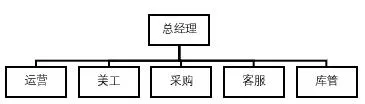
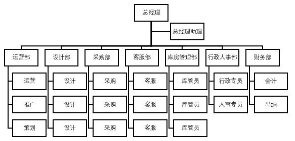
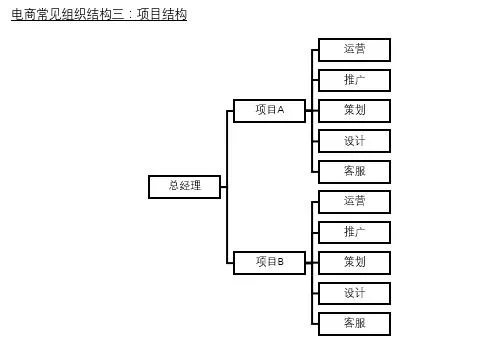
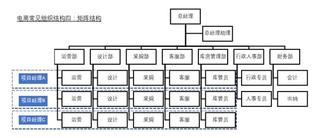
3.4 常见电商代运营模式
电商代运营目前在市场上是非常成熟的一种模式，适用于不同阶段的店铺，从最开始的客服外包一直到全托管，都有不同的模式以及变种去进行支撑。这片市场本身已经是非常红海了，普遍处于代运营能力大于需求的一个状态。
| 模式 | 运营模式 | 优势 | 劣势 |
|---|---|---|---|
| 全托管模式 | 商家将店铺的所有事宜都交给电商代运营公司打理，包括店铺设计、视觉打造、策划营销、售前售后、客户维护等一站式服务。商家只需提供商品，其他事宜都由专业人员打理。 | 省时省力，比较适合有源头货物的店主；比较适合3C/电器等标品（非标品由于特异性较多） | 商家对运营过程缺乏了解，对于产品迭代上会有难度；标品的整体利润薄；有法律风险，运营中出现的问题本质上还是要由店主承担 |
| 半托管模式 | 商家将店铺运营、活动推广、营销策划等工作交给代运营公司，而产品、客服、发货等工作由商家自己负责。 | 电商的核心链路如产品、客服、发货等都还在店主手中；商家能够参与到运营过程中，对电商运营有一定的认知。 | 本质上是将营销的部分给托管出去了，营销在当前电商场域下也是比较重要的部分 |
| 职能托管模式 | 商家将电商业务中的某一块交给代运营公司，如店铺装修、主图详情页设计、突出卖点等。商家根据自己的需求选择不同的服务内容。 | 按需外包，将电商经营中不太重要的部分进行职能外包，降低成本；比较适合中小企业 | 效果会有些折扣，代运营公司不如本公司的员工更加理解产品特质，设计出的卖点等可能不够专业 |
| 收费代运营模式 | 商家与代运营公司签订协议，按照一定的费用支付给代运营公司，由代运营公司负责管理店铺运营、商品上架、推广等工作。 | 商家可以将经营交给专业团队，集中精力在产品和供应链方面。 | 与全托管类似，商家对运营过程缺乏了解，对于产品迭代上会有难度 |
| 分成代运营模式 | 商家与代运营公司共享店铺的收益。代运营公司负责店铺运营和管理，而商家负责提供商品和库存。代运营公司通过优化运营和销售，从店铺收益中获得一定的分成比例。 | 理想的代运营模式，其实就是分销模式，利益绑定，比较适合有产品竞争力的厂商（如果是一些竞争力不强的品，代运营公司不一定愿意接） | 商家对运营过程缺乏了解；利润有侵蚀 |
| 服务费+佣金代运营模式 | 代运营公司收取一定的服务费用，同时还按照销售额或利润比例收取一定的佣金。这样的模式可以激励代运营公司更积极地推动销售，并与商家共同分享风险和收益。 | 与分成模式的核心区别在于代运营公司有保底，比较符合实际；竞争力不强的公司也可以通过这种方式找到合适的代理商 | 商家对运营过程缺乏了解；利润有侵蚀 |
四、尝试对商家做个分层
从上面整体各个阶段的拆解分析来看，电商行业作为一个已经发展了二十年的大红海，基本上每个重复性工作的点都有相关完善的平台系统、三方工具系统来满足商家方方面面的需求。
从我们实体客户的角度的实际分析来看，我们可以将我们物理世界的客户分为如下几类：
| 分类 | 需要的帮助 |
|---|---|
| 电商素人 | 从上面也可以看到，电商整体领域内容极其繁琐以及复杂，如何跑通经营的全链路并产生收益是最为困难的，也就是中小团队一直关注的动销。绝大多数的新商是不具备货品的生产能力的，也难有实际的经营经验。他们需要的是贴身流程上的指导，这个应当是每一个平台缺口最大的东西，因为服务于这批商家得到的收益最小，因此普遍采取规模化支持的方式，但这种方式是远远满足不了商家实际诉求的，所以市面上有大把的教程、付费课堂等等。 |
| 有一点电商经验但无法盈利 | 这类商家其实已经基本明白电商的经营手段，但他们不能以电商谋生，核心的提升点在于如何稳定地赚钱，不然还不如去打工。针对这批商家，需要的是更多的进阶玩法的学习，包括更多流量分配机制、广告投放手段、数据理解以及分析等等。他们需要的是全链路经营能力提升的指导。 |
| 可盈小利 | 与上面这类商家类似，只是他们已经可以靠电商谋生了，那么他们需要的就是扩大规模提升赚钱能力。同样需要的是更多进阶玩法的学习，包括流量分配机制、广告投放手段、数据理解以及分析等等，需要全链路经营能力提升的指导。但这部分核心就涉及到了与平台的对抗，平台需要识别出来一个商家是善意进取的还是恶意地通过破坏规则套利的。 |
| 在其他平台可以持续盈利 | 这类商家已经可以在其他电商平台摸清楚规则并稳定获利，说明已经是电商场域内的玩家，对于电商常规的经营手段已经清楚了，那么他们的核心卡点在于对于陌生平台经营方法论的缺失，他们需要的是平台规则的指导。这批商家也是新商核心转化的对象，当转化过来后将会变为"有一点电商经验但无法盈利"的对象，这批商家再进行相关指导就可以进行跃迁。 |
| 在其他某一平台是头部商家 | 这类商家属于KA、SKA，对于他们而言核心的点在于：我为什么要进入这个平台，也就是平台布局的重要性。这批商家逻辑上已经能够比较稳定地盈利了，扩展其他平台逻辑上是有相关诉求的，那这批商家如何进入可能核心要靠吸引，也就是说他们逻辑上需要的是政策上的吸引。 |
| 在其他多平台是头部商家 | 在其他多平台都是头部商家，而在当前平台不是，这类一般都是品牌商品的销售商家。与品牌的合作逻辑上与其余卖家的合作不同，我们与这类商家的关系其实已经发生了变化，同样需要的是政策上的吸引。并且针对这批商家，本身他们与平台就是互利互惠的关系，会有专门的组织团队去对接，他们的需求也会第一时间得到满足，在这个角度来看，其实他们反而需求得不到满足的缺口是最小的。 |
不论如何最终转化，我们的客户最后成为我们的商家后，一定会被分为以下5类：
| 商家画像 | 对电商平台的诉求 |
|---|---|
| 不盈利的小商家（单店） | 完全摸不着头脑，需要考虑的是如何经营真正赚到钱，这时很多是方法论的传授，让其真正转化为一个合格的卖家。 |
| 偶尔盈利的小商家（单店） | 有一点经验但未形成方法论，需要考虑的是如何稳定地赚钱，那么就需要提升全链路经营的能力，形成自己的方法论，这个也是平台可以去发力的一点。 |
| 稳定赚钱的小商家（单店） | 有方法论但不够成熟，需要考虑的是如何赚更多的钱，同样需要提升全链路的经营能力，形成更成熟的方法论。 |
| 拓展业务的中型商家（单店/多店） | 经营方法论已经相对成熟，需要考虑的是如何将一家店的成功经验复制到另外的店上，这类需要更多的是数据之类的帮助。 |
| 大型商家（单店/多店） | 逻辑上不需要进行指导，他们对平台的诉求，可能更多的是各类数据的聚合分析。 |